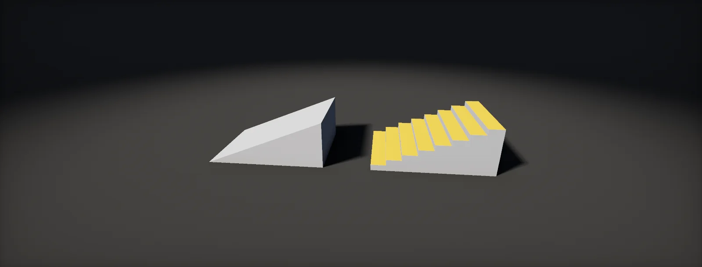

Graphs, Bit Depth and Colour Space
What the numbers in a Substance Designer graph are: output size and inheritance, what 8 and 16 bits mean, why heights band, when you need float formats, and how sRGB and linear values behave inside the graph and on export.

Graph basics
A Substance graph is a chain of small image programs. Every node takes images in, computes a new image, and passes it on, until the last nodes arrive at the outputs (base colour, normal, roughness and so on). Nothing is painted; every pixel is the result of the chain. Change a parameter at the start and every node after it is computed again.
There are two kinds of nodes. are the built-in building blocks (Blend, Levels, Warp, Blur, Transformation 2D, Pixel Processor, FX-Map and a few more). Library nodes such as Tile Sampler, Slope Blur or Histogram Scan are themselves graphs built from atomic nodes, which you can open and read.
Every node outputs one of two kinds of image: greyscale (one channel, shown as L for luminance) or colour (four channels, RGBA, shown as C). Most of a material is greyscale: heights, masks and roughness are single numbers per pixel. Designer stores every node's result so it can recompute only what changed, and that cache costs memory:
Adobe's performance guidelines put a number on the second cost: colour nodes take about four times as long as greyscale ones. Work in greyscale for as long as possible and turn heights and masks into colour near the end, with a Gradient Map or a few Blends.
Output size and inheritance
Every node has two base parameters that decide what its image is: Output Size and Output Format. Neither is usually typed in. Each one is in one of three ways:
- Relative to parent: taken from the graph the node lives in, which takes it from whoever uses the graph: the Parent Size in the Graph view toolbar, the export dialog, or the engine.
- Relative to input: taken from the image on the node's primary input, so a chain follows its first node.
- Absolute: fixed on the node, ignoring everything above.
Sizes are stored as powers of two. A relative size is an offset: 0 means "the same", +1 twice as large, −1 half. That is why the same graph renders at 512 while you work and at 4096 when you export, without touching a node:
Two traps from Adobe's guidelines. An embedded bitmap is Absolute by default, and an Absolute node at the start of a chain forces its size on every node that inherits from it. Keep the Bitmap node Absolute (a Bitmap set to Relative to parent is saved at 256 × 256 when you publish), and put a Transformation 2D set to Relative to parent right after it. And avoid sizes below 16 × 16: they render slower, not faster. A Uniform Color set to Absolute 16 × 16 is the cheap way to make a flat value.
Bit depth
An image stores each channel of each pixel as a number. is how many bits that number gets, and with n bits a channel can hold 2n different values. An 8-bit channel has 256 values from 0 to 255, which Designer shows as 0 to 1 in steps of 1/255. A 16-bit channel has 65 536, in steps of 1/65 535.
Whether you can see the steps depends on how much of the range you use. A gradient from black to white over 1024 pixels at 8 bits has a new value every four pixels, which looks smooth. A gentle gradient that only uses a tenth of the range has 25 values for 1024 pixels: you see bands.
Designer labels each node's format in its info: L8 is greyscale 8 bit, C16 colour 16 bit, and 16F and 32F are the float formats of the next chapters. The 16-bit integer format costs twice the memory of 8 bit and is worth it where small differences matter: heights, and anything you will take a slope of.
Banding and stair-stepped normals
Heights are where 8 bits fail first. A gently sloping surface changes height by only a small amount across the whole texture, so at 8 bits many neighbouring pixels share the same value. The height becomes a staircase: flat terraces with a jump of 1/255 between them.
You rarely look at a height map directly, though. The Normal node, ambient occlusion and the engine's parallax all use its slope, the difference between neighbouring pixels. On a terrace the slope is zero; at each jump it spikes. The normal map turns into rings or ridges along the contour lines:
The fix is to give the height chain 16 bits from its first node: set the generator's Output Format to 16 bits per channel (Absolute), and let the nodes after it inherit it (Relative to input). Converting an 8-bit result to 16 bits later does not help, because the terraces are already in the values. A light blur hides them, but it also softens the detail.
The same applies on export. A height map used for displacement or parallax should leave Designer as a 16-bit PNG or TIFF and be imported in the engine without compression (per-map import settings).
Float formats
The integer formats clamp: every value below 0 becomes 0, every value above 1 becomes 1, at every node. That is usually what you want for a mask, and a problem whenever the maths in between needs room. Subtract one image from another and add it back later, and the integer graph has lost everything that went negative in the middle:
The store real numbers with a sign and an exponent, like the GPU's half and float. 16F (half) holds about three significant digits, 32F about seven, and both go below 0 and above 1. Use them for vector maps that drive warps (directions are negative half the time), for distance fields, for HDR emissive values and for intermediate maths.
Floats spend their precision unevenly: their steps grow with the value. Near 0 a 16F value is very precise; near 1 its step is 1/2048, coarser than 16-bit integer. For heights between 0 and 1, 16-bit integer is the better choice:
sRGB and linear in Designer
Colours on disk and on screen are usually sRGB-encoded, while light adds up in linear values. Both facts matter inside a graph.
Designer has three colour management modes, set in the project settings:
- Legacy (the default): no colour management. Colour values pass through the graph untouched, the graph is considered to work in sRGB, and a Blend mixes the stored, encoded numbers.
- OpenColorIO and Adobe ACE: bitmaps are converted from their colour space into a linear working space, nodes work on linear RGB, and outputs are converted to the colour space you assign on export.
The difference shows when you mix two saturated colours. On encoded values the middle of the blend is darker and duller than the physically correct mix on linear values:
Working linear has a price. Linear values spend their codes evenly, so the darks get few of them, and an 8-bit linear colour image bands where an encoded one would not. That is why Adobe recommends at least 16 bits for colour nodes in OCIO and ACE modes:
Two rules hold in every mode. Data is never colour. Heights, masks, roughness, metallic and normals are numbers, not light; they must never be colour converted, and the engine imports them with sRGB off (the sRGB checkbox). Base colour and emissive are colour: they leave Designer sRGB-encoded at 8 bits, and the engine decodes them when it samples.
In Legacy mode the export choices sRGB, Linear and Raw are mostly labels: only Linear changes the pixels, and it is meant for float HDR images. In OCIO and ACE modes the colour space on each output is a real conversion, so set base colour to sRGB and every data map to raw or data.
Format per map type
Put together, most graphs follow one table. Formats are set once at the first node of a chain, Absolute, and every node after it inherits them:
| Map or node chain | In the graph | Export | Why |
|---|---|---|---|
| Height, displacement | L16 | 16-bit PNG or TIFF | Normals and parallax are computed from its slope; 8 bits terrace it. |
| Normal map | C16 while building, C8 at the output | 8-bit PNG (16-bit for hero assets) | The engine compresses it to BC5 or ASTC anyway. |
| Masks, roughness, metallic, AO | L8 | 8-bit PNG or TGA | Smooth enough, a quarter of the memory of colour. |
| Base colour | C8 (Legacy), C16 (OCIO or ACE) | 8-bit PNG, sRGB | Encoded colour spends its 256 codes where eyes see differences. |
| Vector maps for warps, distance fields | C16F or L16F | not exported | Needs negative values and values above 1. |
| HDR emissive, light maps | C16F or C32F | EXR (Linear) | Brightness above 1 must survive. |
The graph format and the file format are separate decisions. A 16-bit graph exported to an 8-bit PNG loses the extra precision at export, and an 8-bit graph saved as 16-bit TIFF only gains file size. How the files are named and written is covered in Parameters, Publishing and Export.
Set it up in Designer and Unity HDRP
Three places decide the numbers in this unit: the graph attributes in Designer, each node's base parameters, and the texture importer in Unity. The steps set up a graph that follows the table in the last chapter, and an import script that catches 8-bit height maps before they reach a material. Written for Substance 3D Designer 14 and later, Unity 6 with HDRP 17 and the Substance 3D for Unity plugin; menu names can differ slightly between versions.
- In Designer, File > New > Substance graph. Pick a physically based template (metallic/roughness) so the usual outputs exist, and set the size to Relative to parent.
- Click an empty spot of the graph to select the graph itself. In the Properties panel, under the graph's base parameters, check that Output Size is
Relative to parentwith offset (0, 0) and Output Format is8 bits per channel. Every node that inherits from the parent now follows the graph. - Set the Parent Size in the Graph view toolbar to
512or1024while you build. Raise it only to check detail; export at full size from the export dialog instead (next units). - Find the first node of your height chain (the shape or noise generator). In its base parameters set Output Format to
Absoluteand16 bits per channel. Leave the nodes after it onRelative to inputso they inherit the 16 bits. Do the same with16 bits floatfor vector maps that will drive warps. - Check what a node really produces: hover its output connector or select it and look at the 2D view, which show its size and format (for example
1024 × 1024 L16). A colour format on a height chain (C instead of L) is a common slowdown; a Grayscale Conversion node fixes it. - Check the colour management mode in the project settings. Keep Legacy unless the studio works in OCIO or ACE; if it does, set colour nodes to 16 bits and assign
sRGBto the base colour output and a raw or data colour space to every other output. - Export height as a 16-bit PNG and the other maps as 8-bit PNG (the export itself is covered in Parameters, Publishing and Export). Name the height file with an
_Hsuffix. - In Unity, select the exported textures and set the import settings: base colour sRGB on; masks and roughness sRGB off; normal map Texture Type Normal map; height sRGB off, Format
R16, no compression (the per-map table). - Put
HeightImportCheck.csin anEditorfolder. From then on every texture ending in_His imported as linear R16, and an 8-bit PNG logs a warning that points at the file.
#if UNITY_EDITOR
using System.IO;
using UnityEditor;
using UnityEngine;
// Height maps (file names ending in _H) are data: linear, single channel, 16 bit, uncompressed.
// Also reads the PNG header and warns when the file itself only has 8 bits per channel.
public class HeightImportCheck : AssetPostprocessor
{
void OnPreprocessTexture()
{
string name = Path.GetFileNameWithoutExtension(assetPath);
if (!name.EndsWith("_H")) return;
var importer = (TextureImporter)assetImporter;
importer.sRGBTexture = false;
importer.mipmapEnabled = true;
var def = importer.GetDefaultPlatformTextureSettings();
def.format = TextureImporterFormat.R16;
def.textureCompression = TextureImporterCompression.Uncompressed;
importer.SetPlatformTextureSettings(def);
if (assetPath.ToLowerInvariant().EndsWith(".png"))
{
int bits = PngBitDepth(assetPath);
if (bits > 0 && bits < 16)
Debug.LogWarning($"{assetPath} is a {bits}-bit PNG. Heights should be exported at 16 bits, " +
"or normals and parallax computed from them will show terraces.");
}
}
// PNG layout: 8-byte signature, then the IHDR chunk. Byte 24 is the bit depth per channel.
static int PngBitDepth(string path)
{
try
{
using (var f = File.OpenRead(path))
{
var head = new byte[26];
if (f.Read(head, 0, head.Length) < head.Length) return -1;
if (head[0] != 0x89 || head[1] != (byte)'P' || head[2] != (byte)'N' || head[3] != (byte)'G') return -1;
return head[24];
}
}
catch (IOException) { return -1; }
}
}
#endifDesigner does not know which engine will read its files, so the import side is where a wrong flag is cheapest to catch. The texture-settings automation applies the same idea to every map suffix.
Grayscale (which keeps a 16-bit source as G16) and sRGB off. Masks use Masks (no sRGB), normals Normalmap, base colour the default with sRGB on.Sources and further reading
The formulas and engine details in this unit come from these references. Engine documentation changes between versions.
- DocsInheritance in Substance graphsAdobeThe three inheritance methods and the formats 8, 16, 16F and 32F.
- DocsOutput sizeAdobeHow sizes are stored as powers of two and offsets.
- DocsColor managementAdobeLegacy, OpenColorIO and ACE modes, working spaces and export colour spaces.
- DocsPerformance optimization guidelinesAdobeColour versus greyscale cost, bitmap sizes and the 16 × 16 minimum.
- DocsTexture Import SettingsUnitysRGB, format and compression options for the exported maps.